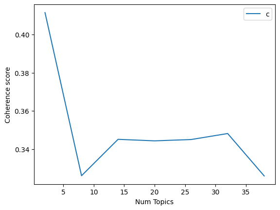

Klasifikasi Berita menggunakan Fitur Latent Dirichlet Allocation#
import pandas as pd
data = pd.read_csv('hasil_preprocessing_berita_supe.csv')
# Tampilkan kolom utama dari file Anda
data[['isi', 'hasil_preprocessing', 'kategori']].head()
| isi | hasil_preprocessing | kategori | |
|---|---|---|---|
| 0 | PebasketSatria MudaAvan Seputramengaku terkeju... | ['pebasketsatria', 'mudaavan', 'seputramengaku... | Lainnya |
| 1 | Timnas Indonesiasudah gagal lolos kePiala Duni... | ['timnas', 'indonesiasudah', 'gagal', 'lolos',... | Lainnya |
| 2 | Sejak pertama kali diperkenalkan pada tahun 19... | ['kali', 'kenal', 'mercedesbenz', 'sprinter', ... | Lainnya |
| 3 | Ada banyak dosen inspiratif di Indonesia. Seba... | ['dosen', 'inspiratif', 'indonesia', 'jajar', ... | Edu |
| 4 | Kylian Mbappemengaku merasa lebih tenang sejak... | ['kylian', 'mbappemengaku', 'tenang', 'pindah'... | Lainnya |
# Gunakan kolom teks bersih Anda
# 'hasil_preprocessing' pada file Anda berisi token hasil preprocessing
# Kita simpan sebagai kolom tunggal untuk analisis
data_text = data[['hasil_preprocessing']]
data_text.head()
| hasil_preprocessing | |
|---|---|
| 0 | ['pebasketsatria', 'mudaavan', 'seputramengaku... |
| 1 | ['timnas', 'indonesiasudah', 'gagal', 'lolos',... |
| 2 | ['kali', 'kenal', 'mercedesbenz', 'sprinter', ... |
| 3 | ['dosen', 'inspiratif', 'indonesia', 'jajar', ... |
| 4 | ['kylian', 'mbappemengaku', 'tenang', 'pindah'... |
data_text['index'] = data_text.index
documents = data_text
documents.head()
/tmp/ipython-input-118329293.py:1: SettingWithCopyWarning:
A value is trying to be set on a copy of a slice from a DataFrame.
Try using .loc[row_indexer,col_indexer] = value instead
See the caveats in the documentation: https://pandas.pydata.org/pandas-docs/stable/user_guide/indexing.html#returning-a-view-versus-a-copy
data_text['index'] = data_text.index
| hasil_preprocessing | index | |
|---|---|---|
| 0 | ['pebasketsatria', 'mudaavan', 'seputramengaku... | 0 |
| 1 | ['timnas', 'indonesiasudah', 'gagal', 'lolos',... | 1 |
| 2 | ['kali', 'kenal', 'mercedesbenz', 'sprinter', ... | 2 |
| 3 | ['dosen', 'inspiratif', 'indonesia', 'jajar', ... | 3 |
| 4 | ['kylian', 'mbappemengaku', 'tenang', 'pindah'... | 4 |
len(documents)
500
!pip install gensim
Collecting gensim
Downloading gensim-4.3.3-cp312-cp312-manylinux_2_17_x86_64.manylinux2014_x86_64.whl.metadata (8.1 kB)
Collecting numpy<2.0,>=1.18.5 (from gensim)
Downloading numpy-1.26.4-cp312-cp312-manylinux_2_17_x86_64.manylinux2014_x86_64.whl.metadata (61 kB)
━━━━━━━━━━━━━━━━━━━━━━━━━━━━━━━━━━━━━━━━ 61.0/61.0 kB 2.4 MB/s eta 0:00:00
?25hCollecting scipy<1.14.0,>=1.7.0 (from gensim)
Downloading scipy-1.13.1-cp312-cp312-manylinux_2_17_x86_64.manylinux2014_x86_64.whl.metadata (60 kB)
━━━━━━━━━━━━━━━━━━━━━━━━━━━━━━━━━━━━━━━━ 60.6/60.6 kB 4.7 MB/s eta 0:00:00
?25hRequirement already satisfied: smart-open>=1.8.1 in /usr/local/lib/python3.12/dist-packages (from gensim) (7.3.1)
Requirement already satisfied: wrapt in /usr/local/lib/python3.12/dist-packages (from smart-open>=1.8.1->gensim) (1.17.3)
Downloading gensim-4.3.3-cp312-cp312-manylinux_2_17_x86_64.manylinux2014_x86_64.whl (26.6 MB)
━━━━━━━━━━━━━━━━━━━━━━━━━━━━━━━━━━━━━━━━ 26.6/26.6 MB 16.8 MB/s eta 0:00:00
?25hDownloading numpy-1.26.4-cp312-cp312-manylinux_2_17_x86_64.manylinux2014_x86_64.whl (18.0 MB)
━━━━━━━━━━━━━━━━━━━━━━━━━━━━━━━━━━━━━━━━ 18.0/18.0 MB 94.1 MB/s eta 0:00:00
?25hDownloading scipy-1.13.1-cp312-cp312-manylinux_2_17_x86_64.manylinux2014_x86_64.whl (38.2 MB)
━━━━━━━━━━━━━━━━━━━━━━━━━━━━━━━━━━━━━━━━ 38.2/38.2 MB 14.9 MB/s eta 0:00:00
?25hInstalling collected packages: numpy, scipy, gensim
Attempting uninstall: numpy
Found existing installation: numpy 2.0.2
Uninstalling numpy-2.0.2:
Successfully uninstalled numpy-2.0.2
Attempting uninstall: scipy
Found existing installation: scipy 1.16.2
Uninstalling scipy-1.16.2:
Successfully uninstalled scipy-1.16.2
ERROR: pip's dependency resolver does not currently take into account all the packages that are installed. This behaviour is the source of the following dependency conflicts.
opencv-python-headless 4.12.0.88 requires numpy<2.3.0,>=2; python_version >= "3.9", but you have numpy 1.26.4 which is incompatible.
tsfresh 0.21.1 requires scipy>=1.14.0; python_version >= "3.10", but you have scipy 1.13.1 which is incompatible.
thinc 8.3.6 requires numpy<3.0.0,>=2.0.0, but you have numpy 1.26.4 which is incompatible.
opencv-python 4.12.0.88 requires numpy<2.3.0,>=2; python_version >= "3.9", but you have numpy 1.26.4 which is incompatible.
opencv-contrib-python 4.12.0.88 requires numpy<2.3.0,>=2; python_version >= "3.9", but you have numpy 1.26.4 which is incompatible.
Successfully installed gensim-4.3.3 numpy-1.26.4 scipy-1.13.1
import gensim
from gensim.utils import simple_preprocess
from nltk.corpus import stopwords
from nltk.stem.porter import *
import numpy as np
!pip install gensim
Requirement already satisfied: gensim in /usr/local/lib/python3.12/dist-packages (4.3.3)
Requirement already satisfied: numpy<2.0,>=1.18.5 in /usr/local/lib/python3.12/dist-packages (from gensim) (1.26.4)
Requirement already satisfied: scipy<1.14.0,>=1.7.0 in /usr/local/lib/python3.12/dist-packages (from gensim) (1.13.1)
Requirement already satisfied: smart-open>=1.8.1 in /usr/local/lib/python3.12/dist-packages (from gensim) (7.3.1)
Requirement already satisfied: wrapt in /usr/local/lib/python3.12/dist-packages (from smart-open>=1.8.1->gensim) (1.17.3)
import nltk
nltk.download('wordnet')
[nltk_data] Downloading package wordnet to /root/nltk_data...
True
!pip install Sastrawi
Collecting Sastrawi
Downloading Sastrawi-1.0.1-py2.py3-none-any.whl.metadata (909 bytes)
Downloading Sastrawi-1.0.1-py2.py3-none-any.whl (209 kB)
?25l ━━━━━━━━━━━━━━━━━━━━━━━━━━━━━━━━━━━━━━━━ 0.0/209.7 kB ? eta -:--:--
━━━━━━━━━━━━━━━━━━━━━━━━━━━━━━━━━━━━━━━╺ 204.8/209.7 kB 11.5 MB/s eta 0:00:01
━━━━━━━━━━━━━━━━━━━━━━━━━━━━━━━━━━━━━━━━ 209.7/209.7 kB 4.9 MB/s eta 0:00:00
?25hInstalling collected packages: Sastrawi
Successfully installed Sastrawi-1.0.1
from Sastrawi.Stemmer.StemmerFactory import StemmerFactory
from nltk.corpus import stopwords
import nltk
nltk.download('stopwords')
factory = StemmerFactory()
stemmer = factory.create_stemmer()
stop_words = stopwords.words('indonesian')
def stemming_indonesia(text):
return stemmer.stem(text)
def preprocess(text):
result = []
for token in gensim.utils.simple_preprocess(str(text)): # tokenisasi
if token not in stop_words and len(token) > 3:
result.append(stemming_indonesia(token))
return result
[nltk_data] Downloading package stopwords to /root/nltk_data...
[nltk_data] Unzipping corpora/stopwords.zip.
import pandas as pd
# Pakai file dan kolom milik Anda
data = pd.read_csv('hasil_preprocessing_berita_supe.csv')
document = data # alias agar konsisten di cell lain
print("\nTampilan kolom 'isi' dan 'hasil_preprocessing':")
print(document[['isi', 'hasil_preprocessing']].head())
print("\nJumlah data:", document.shape)
Tampilan kolom 'isi' dan 'hasil_preprocessing':
isi \
0 PebasketSatria MudaAvan Seputramengaku terkeju...
1 Timnas Indonesiasudah gagal lolos kePiala Duni...
2 Sejak pertama kali diperkenalkan pada tahun 19...
3 Ada banyak dosen inspiratif di Indonesia. Seba...
4 Kylian Mbappemengaku merasa lebih tenang sejak...
hasil_preprocessing
0 ['pebasketsatria', 'mudaavan', 'seputramengaku...
1 ['timnas', 'indonesiasudah', 'gagal', 'lolos',...
2 ['kali', 'kenal', 'mercedesbenz', 'sprinter', ...
3 ['dosen', 'inspiratif', 'indonesia', 'jajar', ...
4 ['kylian', 'mbappemengaku', 'tenang', 'pindah'...
Jumlah data: (500, 3)
import ast
def to_tokens(text: str):
# Jika sudah list, kembalikan langsung
if isinstance(text, list):
return [t for t in text if t]
# Jika string: coba parse list-string, kalau gagal split spasi
s = str(text).strip()
if s.startswith('[') and s.endswith(']'):
try:
parsed = ast.literal_eval(s)
if isinstance(parsed, list):
return [str(t).strip("'\"") for t in parsed if str(t).strip("'\"")]
except Exception:
pass
return [t for t in s.split() if t]
document_num = 0 # Definisikan document_num sesuai dengan kebutuhan Anda
if document_num < len(document):
doc_raw = document.iloc[document_num]['isi']
doc_tokens = document.iloc[document_num]['hasil_preprocessing']
print("\nOriginal document (isi):")
print(doc_raw)
print("\nHasil preprocessing (hasil_preprocessing):")
print(doc_tokens)
# Token array dari hasil_preprocessing (list-string -> list token)
words = to_tokens(str(doc_tokens))
print("\nTokenized words:")
print(words)
else:
print(f"\n⚠️ Nomor {document_num} melebihi jumlah baris ({len(document)})")
Original document (isi):
PebasketSatria MudaAvan Seputramengaku terkejut timnya diakuisisi Persib. Namun, ia meyakini ada hal positif dari perubahan tersebut. Manajemen grup Persib diketahui membuat langkah besar dengan mengambil alih klub basket Satria Muda. Pengumuman pertama kali muncul dalam akun sosial media klub Satria Muda dan Persib pada Senin (4/8/2025). Dengan akuisisi ini maka Satria Muda resmi pindah ke Bandung, Jawa Barat. "Kalau saya dari sisi pemain memang perubahan atau perpindahan ini sangat mengejutkan perbasketan dan pecinta bola basket," kata Avan saat ditemui di Media Center Kemenpora, pada Rabu (6/8/2025). SCROLL TO CONTINUE WITH CONTENT "Tapi dari segi manajemen dan holding sudah sangat memikirkan dengan matang atas perubahan ini, jadi menurut saya pribadi sebagai pemain, memang tidak gampang untuk melakukan suatu perubahan, karena itu memaksa kita untuk keluar dari kebiasaan lama kita." "Memang belum terlihat sisi positifnya, tapi saya yakin suatu organisasi atau individu yang berani melakukan langkah untuk perubahan yang besar, saya yakin suatu saat bukan dari sisi kita, tapi media, pecinta bola basket itu sendiri akan melihat sisi positif yang luar biasa dari perubahan ini," ujarnya. Pemain kelahiran Surabaya 18 Mei 1994 itu menyebut perubahan bakal menjadi tantangan besar bagi tim. Apalagi Satria Muda menjadi satu-satunya tim perwakilan dari Bandung. "Tantangan memang benar karena kami sekarang Satria Muda menjadi satu-satunya tim perwakilan dari Bandung untuk membuat atmosfer di kota tetap hidup. Jadi bukan kami anggap sebagai beban tapi akan mencoba sebagai tantangan baru bagi kami untuk lebih memajukan bola basket di Bandung itu sendiri," ujarnya. Sebelum proses pengambilalihan Satria Muda, PT Persib Bandung Bermartabat juga memiliki klub basket bernama Prawira Bandung. Dengan perubahan ini, maka Prawira otomatis bubar dan Satria Muda menjadi satu-satunya klub di kota kembang tersebut di musim kompetisi IBL mendatang. Menariknya, Satria Muda bahkan juga mengambil tiga pilar Prawira di antaranya Yudha Saputera dan Kelvin Sanjaya. "Pasti nanti kami pertimbangkan akan ada beberapa sisi pemain yang bergabung, tapi siapa-siapanya dalam 24 jam ke depan akan kami umumkan, tapi tidak semua karena dari sisi Satria Muda ada beberapa slot yang dirampingkan. Tapi pada intinya kami masih Satria Muda jadi orang kalau record masih 80-90 persen Satria Muda," ujar Manajer Satria Muda Theodore Adi dalam kesempatan yang sama. Theo, sapaan karibnya, berharap fans basket Indonesia bisa tetap mendukung Satria Muda meski kini berpindah ke Bandung. "Kalau pun kami di Bandung, kami akan berusaha agar diterima masyarakat sekitar dan harapannya untuk teman-teman yang mendukung Satria Muda di mana pun tak hanya di Jakarta, tetap bisa dukung kami ke depannya. Kami juga akan tetap merangkul semua seperti yang ada di logo Satria Muda, kami tak menulis nama kota tapi kita Indonesia," ujarnya. Satria Muda terdekat akan tampil di IBL All Indonesian 2025 di Solo, Jawa Tengah, 16-31 Agustus. Ini adalah turnamen pertama setelah resmi diakuisisi Persib. "Persiapan matang dengan ada suntikan energi yang baru itu membuat kami lebih percaya diri menghadapi IBL All Indonesian 2025 untuk mengambil gelar yang tahun lalu kami kepleset di final," kata Theo.
Hasil preprocessing (hasil_preprocessing):
['pebasketsatria', 'mudaavan', 'seputramengaku', 'kejut', 'tim', 'akuisisi', 'persib', 'positif', 'ubah', 'manajemen', 'grup', 'persib', 'langkah', 'ambil', 'alih', 'klub', 'basket', 'satria', 'muda', 'umum', 'kali', 'muncul', 'akun', 'sosial', 'media', 'klub', 'satria', 'muda', 'persib', 'senin', 'akuisisi', 'satria', 'muda', 'resmi', 'pindah', 'bandung', 'jawa', 'barat', 'sisi', 'main', 'ubah', 'pindah', 'kejut', 'basket', 'cinta', 'bola', 'basket', 'avan', 'temu', 'media', 'center', 'kemenpora', 'rabu', 'scroll', 'to', 'continue', 'with', 'content', 'segi', 'manajemen', 'holding', 'pikir', 'matang', 'ubah', 'pribadi', 'main', 'gampang', 'ubah', 'paksa', 'biasa', 'sisi', 'positif', 'organisasi', 'individu', 'berani', 'langkah', 'ubah', 'sisi', 'media', 'cinta', 'bola', 'basket', 'sisi', 'positif', 'ubah', 'main', 'lahir', 'surabaya', 'mei', 'sebut', 'ubah', 'tantang', 'tim', 'satria', 'muda', 'satusatunya', 'tim', 'wakil', 'bandung', 'tantang', 'satria', 'muda', 'satusatunya', 'tim', 'wakil', 'bandung', 'atmosfer', 'kota', 'hidup', 'anggap', 'beban', 'coba', 'tantang', 'maju', 'bola', 'basket', 'bandung', 'proses', 'pengambilalihan', 'satria', 'muda', 'pt', 'persib', 'bandung', 'martabat', 'milik', 'klub', 'basket', 'nama', 'prawira', 'bandung', 'ubah', 'prawira', 'otomatis', 'bubar', 'satria', 'muda', 'satusatunya', 'klub', 'kota', 'kembang', 'musim', 'kompetisi', 'ibl', 'tarik', 'satria', 'muda', 'ambil', 'pilar', 'prawira', 'yudha', 'saputera', 'kelvin', 'sanjaya', 'timbang', 'sisi', 'main', 'gabung', 'siapasiapanya', 'jam', 'umum', 'sisi', 'satria', 'muda', 'slot', 'ramping', 'inti', 'satria', 'muda', 'orang', 'record', 'persen', 'satria', 'muda', 'manajer', 'satria', 'muda', 'theodore', 'adi', 'sempat', 'theo', 'sapa', 'karib', 'harap', 'fans', 'basket', 'indonesia', 'dukung', 'satria', 'muda', 'pindah', 'bandung', 'bandung', 'usaha', 'terima', 'masyarakat', 'harap', 'temanteman', 'dukung', 'satria', 'muda', 'jakarta', 'dukung', 'depan', 'rangkul', 'logo', 'satria', 'muda', 'tulis', 'nama', 'kota', 'indonesia', 'satria', 'muda', 'dekat', 'tampil', 'ibl', 'all', 'indonesian', 'solo', 'jawa', 'agustus', 'turnamen', 'resmi', 'akuisisi', 'persib', 'siap', 'matang', 'sunti', 'energi', 'percaya', 'hadap', 'ibl', 'all', 'indonesian', 'ambil', 'gelar', 'kepleset', 'final', 'theo']
Tokenized words:
['pebasketsatria', 'mudaavan', 'seputramengaku', 'kejut', 'tim', 'akuisisi', 'persib', 'positif', 'ubah', 'manajemen', 'grup', 'persib', 'langkah', 'ambil', 'alih', 'klub', 'basket', 'satria', 'muda', 'umum', 'kali', 'muncul', 'akun', 'sosial', 'media', 'klub', 'satria', 'muda', 'persib', 'senin', 'akuisisi', 'satria', 'muda', 'resmi', 'pindah', 'bandung', 'jawa', 'barat', 'sisi', 'main', 'ubah', 'pindah', 'kejut', 'basket', 'cinta', 'bola', 'basket', 'avan', 'temu', 'media', 'center', 'kemenpora', 'rabu', 'scroll', 'to', 'continue', 'with', 'content', 'segi', 'manajemen', 'holding', 'pikir', 'matang', 'ubah', 'pribadi', 'main', 'gampang', 'ubah', 'paksa', 'biasa', 'sisi', 'positif', 'organisasi', 'individu', 'berani', 'langkah', 'ubah', 'sisi', 'media', 'cinta', 'bola', 'basket', 'sisi', 'positif', 'ubah', 'main', 'lahir', 'surabaya', 'mei', 'sebut', 'ubah', 'tantang', 'tim', 'satria', 'muda', 'satusatunya', 'tim', 'wakil', 'bandung', 'tantang', 'satria', 'muda', 'satusatunya', 'tim', 'wakil', 'bandung', 'atmosfer', 'kota', 'hidup', 'anggap', 'beban', 'coba', 'tantang', 'maju', 'bola', 'basket', 'bandung', 'proses', 'pengambilalihan', 'satria', 'muda', 'pt', 'persib', 'bandung', 'martabat', 'milik', 'klub', 'basket', 'nama', 'prawira', 'bandung', 'ubah', 'prawira', 'otomatis', 'bubar', 'satria', 'muda', 'satusatunya', 'klub', 'kota', 'kembang', 'musim', 'kompetisi', 'ibl', 'tarik', 'satria', 'muda', 'ambil', 'pilar', 'prawira', 'yudha', 'saputera', 'kelvin', 'sanjaya', 'timbang', 'sisi', 'main', 'gabung', 'siapasiapanya', 'jam', 'umum', 'sisi', 'satria', 'muda', 'slot', 'ramping', 'inti', 'satria', 'muda', 'orang', 'record', 'persen', 'satria', 'muda', 'manajer', 'satria', 'muda', 'theodore', 'adi', 'sempat', 'theo', 'sapa', 'karib', 'harap', 'fans', 'basket', 'indonesia', 'dukung', 'satria', 'muda', 'pindah', 'bandung', 'bandung', 'usaha', 'terima', 'masyarakat', 'harap', 'temanteman', 'dukung', 'satria', 'muda', 'jakarta', 'dukung', 'depan', 'rangkul', 'logo', 'satria', 'muda', 'tulis', 'nama', 'kota', 'indonesia', 'satria', 'muda', 'dekat', 'tampil', 'ibl', 'all', 'indonesian', 'solo', 'jawa', 'agustus', 'turnamen', 'resmi', 'akuisisi', 'persib', 'siap', 'matang', 'sunti', 'energi', 'percaya', 'hadap', 'ibl', 'all', 'indonesian', 'ambil', 'gelar', 'kepleset', 'final', 'theo']
print(document.columns.tolist())
['isi', 'hasil_preprocessing', 'kategori']
# Helper untuk mengubah kolom 'hasil_preprocessing' menjadi list token
# Menangani format list-string seperti "['kata1', 'kata2', ...]" atau string biasa terpisah spasi
import ast
def to_tokens(text: str):
if isinstance(text, list):
return [t for t in text if t]
if isinstance(text, str):
s = text.strip()
# Coba parse sebagai list literal
if s.startswith('[') and s.endswith(']'):
try:
parsed = ast.literal_eval(s)
if isinstance(parsed, list):
return [str(t).strip("'\"") for t in parsed if str(t).strip("'\"")]
except Exception:
pass
# Fallback: split spasi
return [t for t in s.split() if t]
return []
# Tampilkan contoh token hasil konversi
sample_idx = 0
print(to_tokens(str(data.iloc[sample_idx]['hasil_preprocessing']))[:20])
['pebasketsatria', 'mudaavan', 'seputramengaku', 'kejut', 'tim', 'akuisisi', 'persib', 'positif', 'ubah', 'manajemen', 'grup', 'persib', 'langkah', 'ambil', 'alih', 'klub', 'basket', 'satria', 'muda', 'umum']
process_docs = document['isi'].map(preprocess)
process_docs[:10]
| isi | |
|---|---|
| 0 | [pebasketsatria, mudaavan, seputramengaku, kej... |
| 1 | [timnas, indonesiasudah, gagal, lolos, piala, ... |
| 2 | [kali, kenal, mercedes, benz, sprinter, salah,... |
| 3 | [dosen, inspiratif, indonesia, jajar, ilmuwan,... |
| 4 | [kylian, mbappemengaku, tenang, pindah, real, ... |
| 5 | [harry, maguiresudah, pasuk, kontrak, dimanche... |
| 6 | [legenda, jermanmichael, ballackmemahami, muni... |
| 7 | [matamiyu, dancer, cilik, indonesia, bikin, ba... |
| 8 | [christian, vierimenyambut, rencana, runtuh, s... |
| 9 | [putus, menteri, uang, purbaya, yudhi, sadewa,... |
Get a BOW Dict from data
dic = gensim.corpora.Dictionary(process_docs)
count = 0
for k, v in dic.items():
print(k, v)
count += 1
if count > 10:
break
0 agustus
1 akuisisi
2 akun
3 alih
4 ambil
5 anggap
6 atmosfer
7 avan
8 bandung
9 barat
10 basket
filter the dict
dic.filter_extremes(no_below=15, no_above=0.1, keep_n=100000)
Convert document into BOW format by doc2bow
bow_corpus = [dic.doc2bow(doc) for doc in process_docs]
dictionary = dic
document_num = 34
bow_doc = bow_corpus[document_num]
if len(bow_doc) == 0:
print(f"Dokumen ke-{document_num} kosong.")
else:
print(f"=== Isi dokumen ke-{document_num} ===\n")
for word_id, freq in bow_doc:
print(f"Word ID {word_id} (\"{dictionary[word_id]}\") appears {freq} time(s).")
=== Isi dokumen ke-34 ===
Word ID 10 ("bola") appears 2 time(s).
Word ID 23 ("maju") appears 2 time(s).
Word ID 30 ("paksa") appears 1 time(s).
Word ID 50 ("babak") appears 2 time(s).
Word ID 53 ("gagal") appears 1 time(s).
Word ID 67 ("mimpi") appears 1 time(s).
Word ID 104 ("cetak") appears 1 time(s).
Word ID 140 ("madrid") appears 1 time(s).
Word ID 141 ("nyaman") appears 1 time(s).
Word ID 144 ("poin") appears 4 time(s).
Word ID 145 ("raih") appears 1 time(s).
Word ID 146 ("real") appears 1 time(s).
Word ID 148 ("selesai") appears 1 time(s).
Word ID 149 ("skor") appears 7 time(s).
Word ID 150 ("spanyol") appears 1 time(s).
Word ID 169 ("rekan") appears 1 time(s).
Word ID 197 ("bikin") appears 1 time(s).
Word ID 210 ("mantan") appears 1 time(s).
Word ID 214 ("pekan") appears 1 time(s).
Word ID 218 ("stadion") appears 1 time(s).
Word ID 221 ("tuan") appears 1 time(s).
Word ID 224 ("cari") appears 1 time(s).
Word ID 228 ("imbang") appears 1 time(s).
Word ID 303 ("lebar") appears 1 time(s).
Word ID 309 ("sang") appears 1 time(s).
Word ID 311 ("serang") appears 4 time(s).
Word ID 312 ("sisa") appears 1 time(s).
Word ID 338 ("buah") appears 1 time(s).
Word ID 346 ("barcelona") appears 13 time(s).
Word ID 348 ("buruk") appears 1 time(s).
Word ID 349 ("kejar") appears 1 time(s).
Word ID 363 ("situ") appears 1 time(s).
Word ID 388 ("gawang") appears 5 time(s).
Word ID 389 ("hukum") appears 3 time(s).
Word ID 409 ("tiga") appears 1 time(s).
Word ID 427 ("susun") appears 1 time(s).
Word ID 438 ("langgar") appears 2 time(s).
Word ID 463 ("kiri") appears 1 time(s).
Word ID 497 ("minum") appears 1 time(s).
Word ID 514 ("arah") appears 1 time(s).
Word ID 526 ("ancam") appears 1 time(s).
Word ID 527 ("bobol") appears 1 time(s).
Word ID 528 ("kotak") appears 1 time(s).
Word ID 529 ("lini") appears 1 time(s).
Word ID 530 ("menit") appears 6 time(s).
Word ID 531 ("penalti") appears 4 time(s).
TF-IDF on our document set
tfidf = gensim.models.TfidfModel(bow_corpus)
corpus_tfidf = tfidf[bow_corpus]
for docu in corpus_tfidf:
print(docu)
break
[(0, 0.04758716654100069), (1, 0.050067711994295744), (2, 0.04594193633874891), (3, 0.04351550754208484), (4, 0.4303769042851289), (5, 0.04397342694987031), (6, 0.38258064966835936), (7, 0.051461269896260306), (8, 0.0555580046881079), (9, 0.0555580046881079), (10, 0.12790701644302108), (11, 0.051461269896260306), (12, 0.09188387267749781), (13, 0.04492871625507722), (14, 0.054654378524051334), (15, 0.039876692158022704), (16, 0.051461269896260306), (17, 0.04542764921192031), (18, 0.04594193633874891), (19, 0.08527134429534738), (20, 0.10596336478948186), (21, 0.04594193633874891), (22, 0.056513293993314805), (23, 0.05298168239474093), (24, 0.0555580046881079), (25, 0.11721029442064124), (26, 0.6687975575326085), (27, 0.03882078236313636), (28, 0.05752651407698651), (29, 0.05860514721032062), (30, 0.04941221571123179), (31, 0.038483134256058156), (32, 0.040619615037240805), (33, 0.044444247178716055), (34, 0.1463443833736494), (35, 0.14276149962300205), (36, 0.0487814611245498), (37, 0.04397342694987031), (38, 0.03951725867372939), (39, 0.04594193633874891), (40, 0.051461269896260306), (41, 0.13192028084961094), (42, 0.1014999410268568), (43, 0.0507499705134284), (44, 0.054654378524051334), (45, 0.09517433308200138), (46, 0.08200767830166336)]
Running LDA using Bag of Words data
lda_model = gensim.models.LdaMulticore(bow_corpus, num_topics=10, id2word = dic, passes = 2, workers=2)
WARNING:gensim.models.ldamulticore:too few updates, training might not converge; consider increasing the number of passes or iterations to improve accuracy
for idx, topic in lda_model.print_topics():
print("Topic: {} \nWords: {}".format(idx, topic))
print("\n")
Topic: 0
Words: 0.020*"bank" + 0.020*"triliun" + 0.016*"china" + 0.014*"biaya" + 0.014*"purbaya" + 0.012*"presiden" + 0.012*"kaya" + 0.011*"dana" + 0.010*"amerika" + 0.009*"tempat"
Topic: 1
Words: 0.020*"poin" + 0.020*"irak" + 0.012*"king" + 0.011*"bal" + 0.009*"jawa" + 0.009*"kartu" + 0.009*"bola" + 0.008*"united" + 0.008*"area" + 0.008*"unjung"
Topic: 2
Words: 0.026*"mobil" + 0.012*"lindung" + 0.011*"umkm" + 0.011*"listrik" + 0.010*"baru" + 0.009*"unit" + 0.008*"partai" + 0.008*"kendara" + 0.008*"korban" + 0.007*"strategi"
Topic: 3
Words: 0.013*"china" + 0.013*"bahlil" + 0.009*"negeri" + 0.009*"presiden" + 0.009*"dagang" + 0.008*"impor" + 0.008*"ekspor" + 0.008*"miliar" + 0.008*"layan" + 0.007*"esdm"
Topic: 4
Words: 0.030*"warna" + 0.019*"bayern" + 0.012*"pakai" + 0.012*"emas" + 0.011*"serta" + 0.011*"fitur" + 0.011*"guna" + 0.010*"daftar" + 0.009*"matang" + 0.008*"kesan"
Topic: 5
Words: 0.022*"kendara" + 0.015*"bebas" + 0.013*"nikah" + 0.012*"motor" + 0.009*"wanita" + 0.008*"kaki" + 0.008*"hari" + 0.008*"ribu" + 0.007*"menit" + 0.007*"pekan"
Topic: 6
Words: 0.026*"irak" + 0.020*"madrid" + 0.018*"saudi" + 0.018*"arab" + 0.015*"kluivert" + 0.013*"kualifikasi" + 0.011*"china" + 0.011*"patrick" + 0.010*"ronde" + 0.010*"garuda"
Topic: 7
Words: 0.028*"bank" + 0.024*"diskon" + 0.024*"mega" + 0.015*"prime" + 0.015*"full" + 0.015*"kandung" + 0.013*"kartu" + 0.012*"kredit" + 0.011*"tembak" + 0.011*"darah"
Topic: 8
Words: 0.021*"foto" + 0.017*"muda" + 0.012*"liverpool" + 0.009*"saing" + 0.009*"karya" + 0.008*"ajang" + 0.008*"basket" + 0.007*"syariah" + 0.007*"bikin" + 0.007*"performa"
Topic: 9
Words: 0.024*"foto" + 0.022*"instagram" + 0.015*"undang" + 0.015*"kendara" + 0.009*"momen" + 0.008*"lapor" + 0.007*"ulang" + 0.007*"putri" + 0.007*"keluarga" + 0.007*"utara"
Topic coherence
from gensim.models import CoherenceModel
coherence_model_lda = CoherenceModel(model=lda_model, texts=process_docs, dictionary=dic, coherence='c_v')
coherence_lda = coherence_model_lda.get_coherence()
print('\nCoherence Score: ', coherence_lda)
Coherence Score: 0.3070154082219965
from gensim.models import CoherenceModel
coherence_model_lda = CoherenceModel(model=lda_model, texts=process_docs, dictionary=dic, coherence="u_mass")
coherence_lda = coherence_model_lda.get_coherence()
print('\nCoherence Score: ', coherence_lda)
Coherence Score: -6.166335021964192
find the optimal number of topics
def compute_coherence_values(dictionary, corpus, texts, limit, start=2, step=3):
coherence_values = []
model_list = []
for num_topics in range(start, limit, step):
model=gensim.models.LdaMulticore(corpus=corpus, id2word=dic, num_topics=num_topics)
model_list.append(model)
coherencemodel = CoherenceModel(model=model, texts=texts, dictionary=dic, coherence='c_v')
coherence_values.append(coherencemodel.get_coherence())
return model_list, coherence_values
model_list, coherence_values = compute_coherence_values(dictionary=dic, corpus=bow_corpus, texts=process_docs, start=2, limit=40, step=6)
WARNING:gensim.models.ldamulticore:too few updates, training might not converge; consider increasing the number of passes or iterations to improve accuracy
WARNING:gensim.models.ldamulticore:too few updates, training might not converge; consider increasing the number of passes or iterations to improve accuracy
WARNING:gensim.models.ldamulticore:too few updates, training might not converge; consider increasing the number of passes or iterations to improve accuracy
WARNING:gensim.models.ldamulticore:too few updates, training might not converge; consider increasing the number of passes or iterations to improve accuracy
WARNING:gensim.models.ldamulticore:too few updates, training might not converge; consider increasing the number of passes or iterations to improve accuracy
WARNING:gensim.models.ldamulticore:too few updates, training might not converge; consider increasing the number of passes or iterations to improve accuracy
WARNING:gensim.models.ldamulticore:too few updates, training might not converge; consider increasing the number of passes or iterations to improve accuracy
import matplotlib.pyplot as plt
limit=40; start=2; step=6;
x = range(start, limit, step)
plt.plot(x, coherence_values)
plt.xlabel("Num Topics")
plt.ylabel("Coherence score")
plt.legend(("coherence_values"), loc='best')
plt.show()

Running LDA using TF-IDF
lda_model_tfidf = gensim.models.LdaMulticore(corpus_tfidf, num_topics=10, id2word = dic, passes = 2, workers=4)
WARNING:gensim.models.ldamulticore:too few updates, training might not converge; consider increasing the number of passes or iterations to improve accuracy
for idx, topic in lda_model_tfidf.print_topics(-1):
print("Topic: {} Word: {}".format(idx, topic))
print("\n")
Topic: 0 Word: 0.008*"desain" + 0.007*"fitur" + 0.007*"syariah" + 0.007*"spesifikasi" + 0.007*"karakter" + 0.007*"peran" + 0.006*"china" + 0.006*"partai" + 0.005*"mil" + 0.005*"kontribusi"
Topic: 1 Word: 0.008*"bijak" + 0.007*"purbaya" + 0.006*"listrik" + 0.005*"selatan" + 0.005*"alat" + 0.005*"olahraga" + 0.005*"serap" + 0.005*"bal" + 0.005*"foto" + 0.005*"rokok"
Topic: 2 Word: 0.012*"liverpool" + 0.011*"madrid" + 0.010*"menit" + 0.009*"bayern" + 0.009*"bola" + 0.008*"impor" + 0.007*"gawang" + 0.007*"bahlil" + 0.007*"poin" + 0.007*"real"
Topic: 3 Word: 0.021*"irak" + 0.012*"kluivert" + 0.011*"saudi" + 0.011*"arab" + 0.011*"kualifikasi" + 0.010*"poin" + 0.010*"patrick" + 0.009*"king" + 0.008*"garuda" + 0.007*"juara"
Topic: 4 Word: 0.016*"bayern" + 0.014*"foto" + 0.008*"presiden" + 0.008*"mobil" + 0.007*"layan" + 0.006*"bogor" + 0.006*"perempuan" + 0.006*"trofi" + 0.006*"instagram" + 0.006*"polisi"
Topic: 5 Word: 0.009*"wisata" + 0.008*"malam" + 0.006*"olahraga" + 0.006*"foto" + 0.006*"september" + 0.006*"miliar" + 0.006*"undang" + 0.005*"barat" + 0.005*"prabowo" + 0.005*"ruang"
Topic: 6 Word: 0.008*"basket" + 0.008*"nikah" + 0.007*"kandung" + 0.007*"korban" + 0.007*"tubuh" + 0.007*"darah" + 0.007*"konsumsi" + 0.007*"mil" + 0.007*"luka" + 0.006*"barcelona"
Topic: 7 Word: 0.017*"diskon" + 0.015*"mega" + 0.014*"bank" + 0.011*"prime" + 0.011*"kartu" + 0.011*"full" + 0.008*"kredit" + 0.006*"promo" + 0.006*"irak" + 0.006*"bakar"
Topic: 8 Word: 0.014*"instagram" + 0.012*"foto" + 0.008*"karya" + 0.007*"netizen" + 0.007*"mobil" + 0.007*"rilis" + 0.007*"cedera" + 0.006*"fitur" + 0.006*"korea" + 0.006*"karakter"
Topic: 9 Word: 0.012*"kendara" + 0.011*"mobil" + 0.010*"listrik" + 0.008*"fitur" + 0.008*"pekan" + 0.007*"baterai" + 0.006*"madrid" + 0.006*"mesin" + 0.006*"motor" + 0.006*"warna"
from gensim.models import CoherenceModel
coherence_model_lda_idf = CoherenceModel(model=lda_model_tfidf, texts=process_docs, dictionary=dic, coherence='c_v')
coherence_model_lda_idf = coherence_model_lda_idf.get_coherence()
print('\nCoherence Score: ', coherence_model_lda_idf)
Coherence Score: 0.4366435522243962
classifying sample document using LDA Bag of Words model
process_docs[document_num]
['pebasketsatria',
'mudaavan',
'seputramengaku',
'kejut',
'tim',
'akuisisi',
'persib',
'positif',
'ubah',
'manajemen',
'grup',
'persib',
'langkah',
'ambil',
'alih',
'klub',
'basket',
'satria',
'muda',
'umum',
'kali',
'muncul',
'akun',
'sosial',
'media',
'klub',
'satria',
'muda',
'persib',
'senin',
'akuisisi',
'satria',
'muda',
'resmi',
'pindah',
'bandung',
'jawa',
'barat',
'sisi',
'main',
'ubah',
'pindah',
'kejut',
'basket',
'cinta',
'bola',
'basket',
'avan',
'temu',
'media',
'center',
'kemenpora',
'rabu',
'scroll',
'continue',
'with',
'content',
'segi',
'manajemen',
'holding',
'pikir',
'matang',
'ubah',
'pribadi',
'main',
'gampang',
'ubah',
'paksa',
'biasa',
'sisi',
'positif',
'organisasi',
'individu',
'berani',
'langkah',
'ubah',
'sisi',
'media',
'cinta',
'bola',
'basket',
'sisi',
'positif',
'ubah',
'main',
'lahir',
'surabaya',
'sebut',
'ubah',
'tantang',
'satria',
'muda',
'satu',
'wakil',
'bandung',
'tantang',
'satria',
'muda',
'satu',
'wakil',
'bandung',
'atmosfer',
'kota',
'hidup',
'anggap',
'beban',
'coba',
'tantang',
'maju',
'bola',
'basket',
'bandung',
'proses',
'pengambilalihan',
'satria',
'muda',
'persib',
'bandung',
'martabat',
'milik',
'klub',
'basket',
'nama',
'prawira',
'bandung',
'ubah',
'prawira',
'otomatis',
'bubar',
'satria',
'muda',
'satu',
'klub',
'kota',
'kembang',
'musim',
'kompetisi',
'tarik',
'satria',
'muda',
'ambil',
'pilar',
'prawira',
'yudha',
'saputera',
'kelvin',
'sanjaya',
'timbang',
'sisi',
'main',
'gabung',
'siapa',
'umum',
'sisi',
'satria',
'muda',
'slot',
'ramping',
'inti',
'satria',
'muda',
'orang',
'record',
'persen',
'satria',
'muda',
'manajer',
'satria',
'muda',
'theodore',
'sempat',
'theo',
'sapa',
'karib',
'harap',
'fans',
'basket',
'indonesia',
'dukung',
'satria',
'muda',
'pindah',
'bandung',
'bandung',
'usaha',
'terima',
'masyarakat',
'harap',
'teman',
'teman',
'dukung',
'satria',
'muda',
'jakarta',
'dukung',
'depan',
'rangkul',
'logo',
'satria',
'muda',
'tulis',
'nama',
'kota',
'indonesia',
'satria',
'muda',
'dekat',
'tampil',
'indonesian',
'solo',
'jawa',
'agustus',
'turnamen',
'resmi',
'akuisisi',
'persib',
'siap',
'matang',
'sunti',
'energi',
'percaya',
'hadap',
'indonesian',
'ambil',
'gelar',
'kepleset',
'final',
'theo']
for index, score in sorted(lda_model[bow_corpus[document_num]], key=lambda tup: tup[1], reverse=True):
print("\nScore: {}\t Topic: {}".format(score, lda_model.print_topic(index, 5)))
Score: 0.9901076555252075 Topic: 0.021*"foto" + 0.017*"muda" + 0.012*"liverpool" + 0.009*"saing" + 0.009*"karya"
lda_model[bow_corpus[document_num]]
[(8, 0.99010766)]
sorted(lda_model[bow_corpus[document_num]], key=lambda tup: tup[1], reverse=True)
[(8, 0.9901076)]
lda_model.print_topic(index, 10)
'0.021*"foto" + 0.017*"muda" + 0.012*"liverpool" + 0.009*"saing" + 0.009*"karya" + 0.008*"ajang" + 0.008*"basket" + 0.007*"syariah" + 0.007*"bikin" + 0.007*"performa"'
classifying sample document using LDA TF-IDF model
for index, score in sorted(lda_model_tfidf[bow_corpus[document_num]], key=lambda tup: tup[1], reverse=True):
print("\nScore: {}\t Topic: {}".format(score, lda_model_tfidf.print_topic(index, 5)))
Score: 0.6442279815673828 Topic: 0.008*"basket" + 0.008*"nikah" + 0.007*"kandung" + 0.007*"korban" + 0.007*"tubuh"
Score: 0.17573833465576172 Topic: 0.009*"wisata" + 0.008*"malam" + 0.006*"olahraga" + 0.006*"foto" + 0.006*"september"
Score: 0.13444708287715912 Topic: 0.021*"irak" + 0.012*"kluivert" + 0.011*"saudi" + 0.011*"arab" + 0.011*"kualifikasi"
Score: 0.03898896276950836 Topic: 0.012*"kendara" + 0.011*"mobil" + 0.010*"listrik" + 0.008*"fitur" + 0.008*"pekan"
Testing model on unseen document
unseen_document = "abdillah"
bow_vector = dic.doc2bow(preprocess(unseen_document))
for index, score in sorted(lda_model[bow_vector], key = lambda tup : tup[1], reverse=True):
print('Score: {}\t Topik {}'.format(score, lda_model.print_topic(index, 5)))
Score: 0.5498747825622559 Topik 0.030*"warna" + 0.019*"bayern" + 0.012*"pakai" + 0.012*"emas" + 0.011*"serta"
Score: 0.05003386363387108 Topik 0.026*"mobil" + 0.012*"lindung" + 0.011*"umkm" + 0.011*"listrik" + 0.010*"baru"
Score: 0.05002230405807495 Topik 0.020*"bank" + 0.020*"triliun" + 0.016*"china" + 0.014*"biaya" + 0.014*"purbaya"
Score: 0.05001581460237503 Topik 0.021*"foto" + 0.017*"muda" + 0.012*"liverpool" + 0.009*"saing" + 0.009*"karya"
Score: 0.050012100487947464 Topik 0.026*"irak" + 0.020*"madrid" + 0.018*"saudi" + 0.018*"arab" + 0.015*"kluivert"
Score: 0.05001060292124748 Topik 0.013*"china" + 0.013*"bahlil" + 0.009*"negeri" + 0.009*"presiden" + 0.009*"dagang"
Score: 0.05000902712345123 Topik 0.020*"poin" + 0.020*"irak" + 0.012*"king" + 0.011*"bal" + 0.009*"jawa"
Score: 0.05000784248113632 Topik 0.024*"foto" + 0.022*"instagram" + 0.015*"undang" + 0.015*"kendara" + 0.009*"momen"
Score: 0.050007086247205734 Topik 0.022*"kendara" + 0.015*"bebas" + 0.013*"nikah" + 0.012*"motor" + 0.009*"wanita"
Score: 0.050006620585918427 Topik 0.028*"bank" + 0.024*"diskon" + 0.024*"mega" + 0.015*"prime" + 0.015*"full"